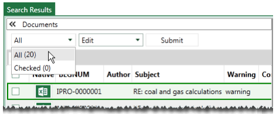
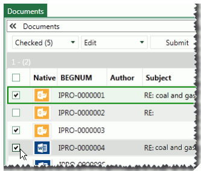
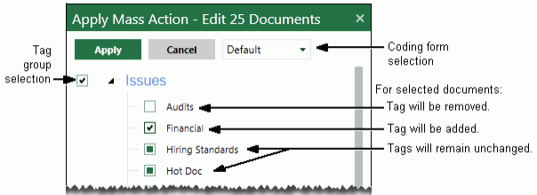

Note: For this procedure, you do not have to enable tagging in the Record View pane.
If you have the permissions needed to do so, use the following procedure to tag multiple documents in the same way all at once.
|
|
Note: For this procedure, you do not have to enable tagging in the Record View pane. |
In the Documents or related tab’s toolbar, click actions to open the mass actions toolbar.
Select Edit in the mass actions toolbar and complete step 3 or 4 as needed to select the documents to be tagged.
All documents: To tag all documents in the current document set (based on your selection during preparation):
|
|
Note that all documents in a batch or an entire case may be tagged, although such selections may be too large to be processed effectively. |
Select All, from the mass actions toolbar as shown in the following figure.

Skip to step 5.
Selected documents: To tag selected documents in the active tab (Documents, Batch, etc.):
Select the options on the left side of the needed documents in the case table as shown in the following figure.

In the mass actions toolbar, select Checked.
Continue with the next step.
Select Edit in the mass action toolbar, then click Submit.
In the resulting dialog box, make the following selections.
Coding form: select the form that includes the needed tags.
Tag group: select the applicable tag group (must be selected by user).
Tags: select or clear individual tags. To leave tags that have already been applied unchanged, leave the option box as-is, .
See the following figure for details.

|
|
IMPORTANT!
|
Click Apply.
Repeat this procedure for other groups of documents that need to be tagged in the same way.